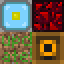

ホーム
->
Minecraft BE アドオン/リソースパック一覧
-> Hack Item Giver

Hack Item Giver
Hackなどを使わずに通常では出せないアイテムやブロックを出せるようにするアドオンです!
このアドオンの説明
このアドオンは、通常ToolboxなどのHackクライアントもしくはMCC Tool Chest PEなどのワールドエディタを使わないと入手できないアイテムやブロックをアドオンで入手できるようにするアドオンです!
簡単に隠しアイテムを入手できます!
このアドオンの使用方法
ワールドのリソースパックとビヘイビアパックにHack_Item_Giverを適用します。
クリエイティブで棒を何本か用意します。
チャット欄で「/summon hack:item_giver」を実行します。
スティーブが召喚されるので右クリックまたは長押しします。
交易画面が出てくるので、入手したいアイテムを棒をトレードします。
ダウンロードする
MediaFireからダウンロードできます。
ダウンロード! (v1.0.0)